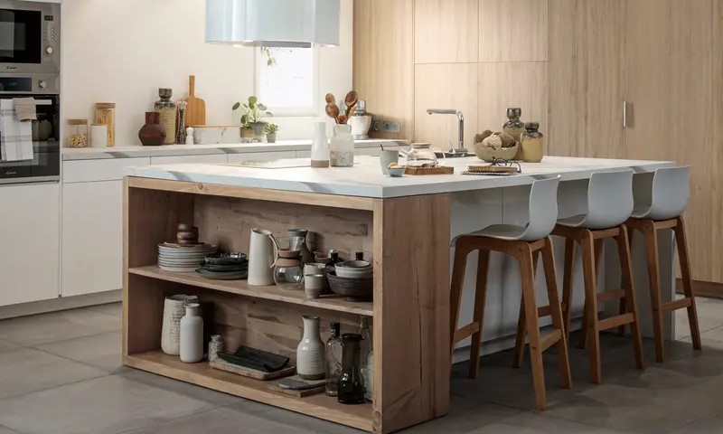

Cocinas con peninsula
En una de las esquinas, se agrega una extensión de la encimera o un área adicional de trabajo conectada al resto de la cocina. Esta península puede servir como un espacio para preparar alimentos, un área para comer informalmente o como una superficie adicional para tareas culinarias.
